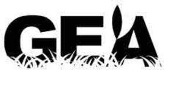

Trade Mark Journal No.2025/048 28 November 2025
UK00004297731 20 November 2025 (13)

International priority date claimed: 19 August 2025
(European Union Intellectual Property Office (EUIPO))
(019234676)
- Class 13
- Ammunition and projectiles; Explosives; Air pistols [air guns]; Protective shields adapted for firearms; Cartridge case receivers for semi-automatic firearms; Protective cases adapted for firearms; Covers for firearms; Cartridge case receivers for automatic firearms; Barrel reflectors for firearms; Cleaning rods for firearms; Firearm sights; Ammunition for firearms; Breeches of firearms; Air pistols [weapons]; Loaded cartridge magazines for firearms; Cleaning implements for firearms; Rifles; Firearms; Hunting firearms; Handguns [firearms]; Small arms [firearms]; Gun-cleaning decappers; Cartridge magazines for firearms; Sling straps for firearms; Firearm stands; Automatic guns; Small bore firearms; Projectiles [weapons]; Automatic firearm ammunition belts; Loading clips for small arms; Containers for launching weapons; Shoulder straps for weapons; Case covers for firearms; Containers for storing weapons; Cartridges for carrying materials to be deployed in weapon installations; Trench weapons; Gun scabbards; Powder flasks for firearms; Weapons for launching projectiles; Silencers for firearms; Gun sights; Foresights for firearms; Noise-suppressors for guns; Mortars [firearms]; Motorized weapons; Small arms; Weapons; Weapon cartridges for use with liquid nitrogen; Bags for storing firearms [specifically adapted]; Pistols [arms]; Magazines for weapons; Carrying cases adapted for firearms; Supplemental chambers for firearms; Cleaning brushes for firearms; Cartridges for firearms; Primings [fuses]; Fuses for explosives; Detonating fuses for explosives; Fuses for explosives, for use in mines; Sporting rifles; Hunting rifles [sporting rifles]; Rifle covers; Shotguns; Rifle cases; Shotgun ammunition; Rifle covers; Cartridge shot pouches; Hunting gun cartridges; Sporting cartridges; Bandoliers for holding cartridges and ammunition cases; Cartridges; Shot for gun cartridges; Explosive cartridges; Blank cartridges; Blank cartridge shells; Cartridge dies; Ammunition parts such as wadding and cuvettes.
CHEDDITE ITALY S.r.l
Representative: Lysaght